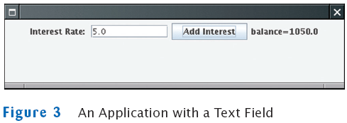

Use JTextField components to provide space for user input
final int FIELD_WIDTH = 10; // In characters
final JTextField rateField = new JTextField(FIELD_WIDTH);
Place a JLabel next to each text field
JLabel rateLabel = new JLabel("Interest Rate: ");
Supply a button that the user can press to indicate that the input is ready for processing

The button's actionPerformed method reads the user input from the text fields (use getText)
class AddInterestListener implements ActionListener
{
public void actionPerformed(ActionEvent event)
{
double rate = Double.parseDouble(rateField.getText());
. . .
}
}